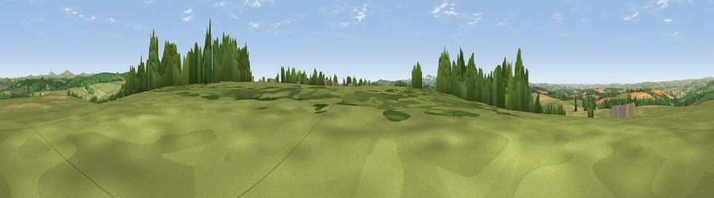

Viewpoint near Helland
#8661 in England · top 20% of its area beats it · near HellandWhere it is
The exact computed spot (SX 09550 70425). Click the marker for map links.
The view, rendered

A 360° render of this exact spot computed from the terrain model, tree cover and land cover — summer colours, afternoon light, calibrated against photographs of famous viewpoints. Real trees, hedges and buildings will differ in detail.
The panorama
Grey silhouette: terrain skyline in each direction (720 bearings, Earth curvature and refraction included). Dashed green: skyline with trees (+15 m) and buildings (+8 m) as obstacles. Blue strip: how far the ground is visible on each bearing.
Where the view opens
Wedge length = distance to the farthest visible ground on that bearing (vegetation-aware). Rings at 10, 25 and 50 km.
What fills the view
65% grassland · 20% cropland · 13% woodland · 1% built-up ·
Angular shares of the visible panorama (visual magnitude), not map area. Landscape diversity 0.41 (0–1 Shannon).
Key numbers
More beautiful places nearby
The staircase of upgrades: each row has a higher view potential than everything closer. Driving times are estimates from straight-line distance, calibrated against real road routing — check an actual route before setting out.
| Place | Direction | Drive | Score |
|---|---|---|---|
| Viewpoint near Blisland | ENE · 3 km | ~8 min | 65.6 |
| Viewpoint near Blisland | NNE · 4 km | ~9 min | 67.0 |
| Viewpoint near Cardinham | E · 4 km | ~9 min | 71.1 |
| Viewpoint near Lanivet | SSW · 8 km | ~16 min | 73.1 |
| Berry Down | E · 10 km | ~20 min | 73.5 |
| Brown Willy | NNE · 11 km | ~22 min | 77.3 |
| Viewpoint near Port Isaac | NW · 12 km | ~23 min | 79.7 |
| Viewpoint near Stenalees | SSW · 16 km | ~28 min | 88.0 |
50.50258, -4.68699 · source: screening · position refined by local search. Computed location — check access rights before visiting.